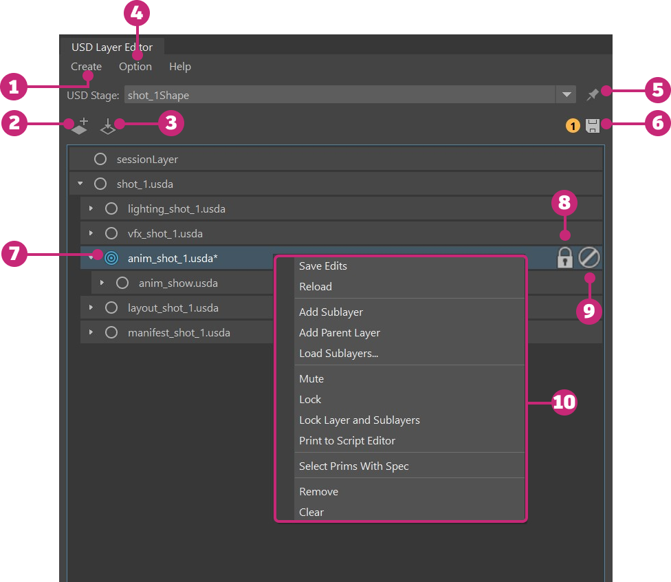
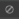

USD Layer Editor
The USD Layer Editor is where you organize and edit USD layers. To open the USD Layer Editor, do one of the following:
- Windows > USD Layer Editor
- In the Outliner, right-click a prim, stageShape, or stage (proxyShape node) and select USD Layer Editor
In Maya, the two types of layers you can have are the following:
- File-backed/Existing Layer: A layer that has been saved to a file on disk.
- Anonymous Layer: A layer that has not been saved to disk. When newly created, this is an empty layer.
USD Layer Editor Interface

| # | Option | Description |
|---|---|---|
| 1 | Create a stage | Select from this menu to create a new USD stage or create a stage from an existing USD file. |
| 2 | Add a new layer | Click |
| 3 | Load an existing layer | Click |
| 4 | Options menu | Select Options > Auto-Hide Session Layer to automatically hide the session layer. |
| 5 | Pin a stage | Click to pin a stage. When pinned, the stage selection in the USD Layer Editor will be maintained regardless of the selection made in the Outliner. When unpinned, the stage selection in the USD Layer Editor will automatically update to reflect the stage or prim currently selected in the Outliner. Tip: Setting a pin will trigger a scene save. Also, your pin state and selected stage will be remembered between Maya sessions. |
| 6 | Save a stage | Click |
| 7 | Set target layer | Hover next to a layer name and click the grey target icon when it appears. Once a layer is set as the target layer, the highlighted target icon appears next to the layer name. Once a layer is set as the target layer, any scene editing operations are made on this layer. |
| 8 | Lock a Layer | Click to lock a layer. When a layer is locked, you cannot target or add sublayers to it. If a locked layer has sublayers, they cannot have new parent layers added to them. |
| 9 | Mute a Layer | Click  to mute a layer. When a layer is muted, it is ignored by the stage and the contents of the muted layer disappear in the Viewport and Outliner. Muted layers do not participate in value resolution or composition. Muting can be used if a particular layer is affecting performance or having an undesirable effect on the scene. |
| 10 | Context menu | Access the context menu by right-clicking a layer. |
Read-only layers or layers with metadata SetPermissiontoEdit=False will have limited capabilites from the full set of options in the Layer Editor. See read-only layers in the USD Layer Editor context menu to learn more.
Opinions
Layers contain opinions about the prims in the scene. Creating a value for an attribute, metadata or relationship also creates an opinion for the object on the layer. The strengths of the layers in a layer stack determines which opinion is expressed in the scene. One object may be affected by multiple opinions on different layers. In USD, LIVRPS strength ordering provides a framework for the ordering of opinions. For example, if the asset department creates a green teacup. At a later date, the lighting department decides to make the teacup white by adding an opinion on the lighting layer. According to LIVRPS rules, the strongest opinion wins. With the local layer in the layer stack being the strongest, the teacup is rendered white. For more information on LIVRPS strength ordering, visit LIVRPS strength ordering
As a form of best practice, avoid performing edits (either via Manipulators, the Attribute Editor or the Outliner) to weaker layers in your layer stack. Edits performed to weaker layers will be blocked as the USD framework is based on top level layers having stonger opinions that override those of weaker layers in the stack.
Related Concepts: If you're new to USD, you can get started by learning USD terminology and composition USD terms and structure. Relevant information is also available in Pixar's USD documentation: layer, layer stack, root layer stack, session layer, stage, composition, composition arcs, LIVRPS strength ordering, opinions, and references.